Executive Summary
Key market highlights and overall sentiment assessment
Key Highlights
- Nvidia earnings are the dominant market catalyst, with AI and robotics vision driving Asia tech rally, but stock slipping on results day.
- Geopolitical tensions (Iran, US-Iran peace deal, Hormuz) are causing oil swings, gold steadiness, and extreme bear scenarios for Asian currencies.
- Inflation worries persist, with Fed officials discussing rate hikes and consumer spending under pressure (Target earnings, rising gas prices).
- SpaceX IPO is confirmed, with Goldman Sachs as lead underwriter, potentially making Elon Musk a trillionaire.
- China-EU trade tensions escalate with China warning of retaliation over tougher trade curbs.
- Junk debt rally sparks complacency fears as risk rises, while oil drawdowns hit record pace.
- Meta begins sweeping layoffs with severance details; Codelco fires executive for overstating copper output.
- Euro-zone growth buckling under war impact; global growth weighed by war with inflation intensifying.
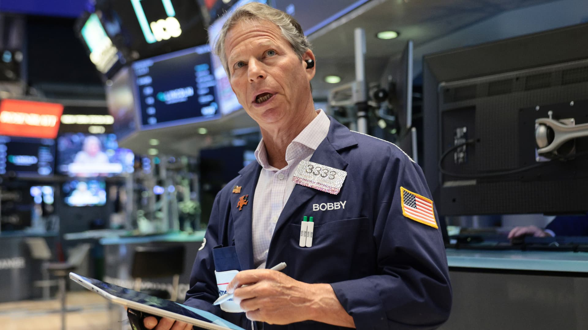
13S&P 500 futures fall as traders await Nvidia’s earnings: Live updates - CNBC
Nvidia's Earnings Are Hours Away. Here Are 3 Things to Watch. - Yahoo Finance
Nvidia slips after earnings, SpaceX & OpenAI IPOs in focus | The Asia Trade 5/21/2026
US Stocks Steady as Traders Await Hormuz Progress: Markets Wrap
War Weighs on Global Growth With Inflation Worries Intensifying
Euro-Zone Growth Is Buckling Under Weight of War Impact
Junk Debt’s Red-Hot Rally Sparks Complacency Fears as Risk Rises
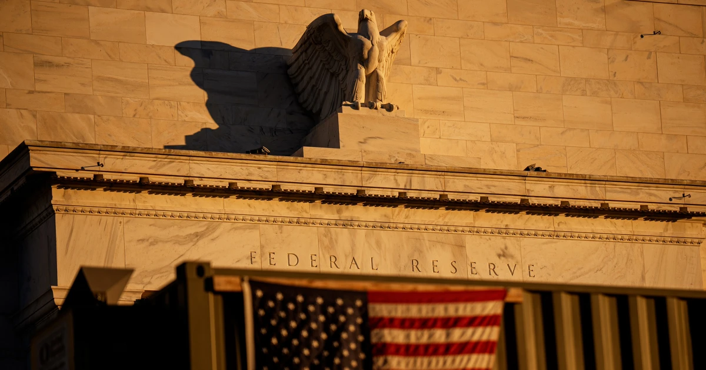
57Fed officials’ concerns about inflation sparked talk of rate hike during last meeting
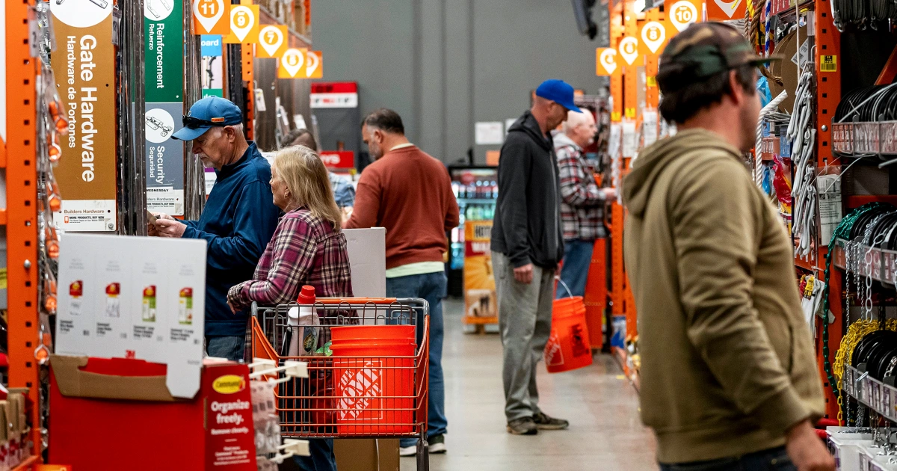
59Are consumers cracking under the weight of high prices? We’re about to find out
SpaceX confirms plans for an IPO that could make Elon Musk a trillionaire
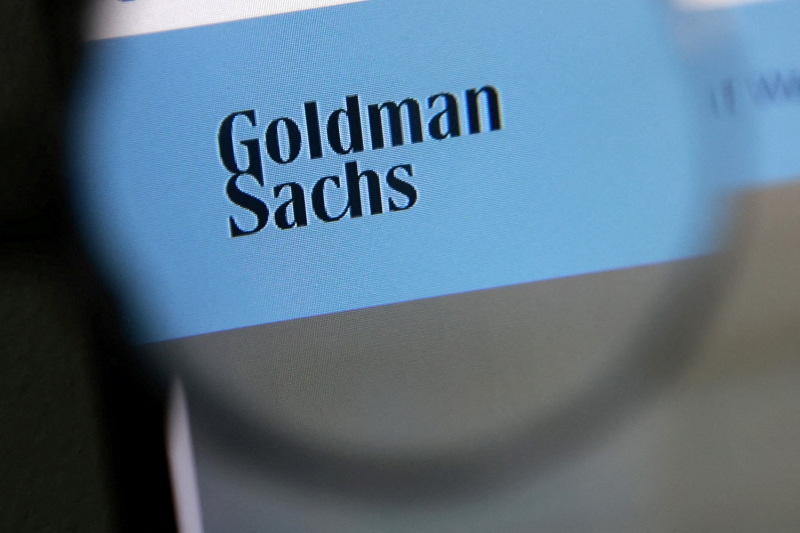
24Goldman Sachs set to be named lead left underwriter for SpaceX IPO, source says
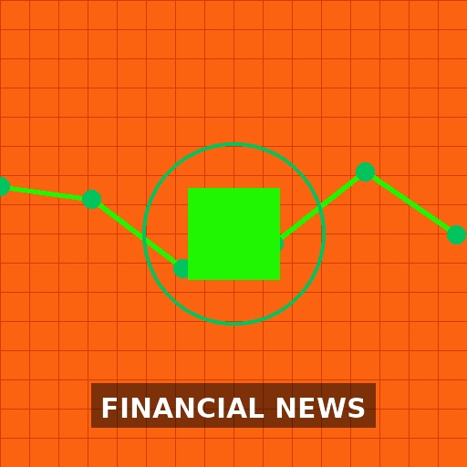
97SpaceX IPO Requires Leap of Faith in AI, Mars and Musk’s Vision
China Warns EU of Retaliation as Bloc Mulls Tougher Trade Curbs
Goldman Says Oil Drawdowns Hit Record Pace as Buffer Shrinks
Meta begins cutting thousands of jobs in sweeping layoffs. Here's how much it's paying in severance. - Business Insider
Codelco Fires Executive for Overstating Copper Output in Chile
Oil Swings After Steep Drop as Traders Await Iran Response to US
Gold Steadies as Traders Weigh Prospects of US-Iran Peace Deal
Iran War Spurs Extreme Bear Scenarios for Asia Currencies, Bonds
Target is set to report first-quarter earnings, offer read on consumer - CNBC
How Rising Gas Prices Are Hampering 2026 Summer Travel Plans
Market Insights
Sector trends, themes, and emerging market dynamics
Key Market Themes
Sector Analysis
Technology (AI/Semiconductors)
Nvidia earnings are the focal point; AI and robotics vision is igniting Asia tech rally, but Nvidia stock is slipping ahead of results. Credo Technology and Himax Technologies are rising on strong chip demand. xAI burned $6.4B last year, highlighting massive AI spending.
AI investment cycle remains robust, but high expectations create volatility. Nvidia's results will set near-term direction for the sector. AI is fast-tracking Gen Z workers into complex jobs, indicating structural shift.
S&P 500 futures fall as traders await Nvidia’s earnings: Live updates - CNBC
Nvidia's Earnings Are Hours Away. Here Are 3 Things to Watch. - Yahoo Finance
Nvidia slips after earnings, SpaceX & OpenAI IPOs in focus | The Asia Trade 5/21/2026
Nvidia’s Huang Ignites Asia Tech Rally With AI, Robots Vision
Credo Technology (CRDO) Soars 8% as Investors Gear Up for Earnings
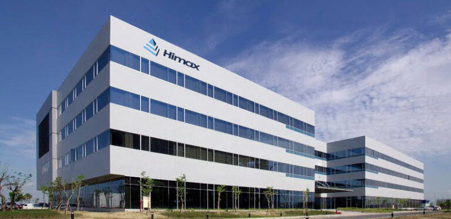
48Himax Technologies (HIMX) Climbs 6.6% on Strong Chip Demand
xAI burned $6.4B last year - SpaceX’s IPO filing shows why the spending is far from over
AI Is Fast-Tracking Gen Z Workers Into More Complex Jobs
Energy & Commodities
Oil swings after steep drop as traders await Iran response to US; Goldman says oil drawdowns hit record pace. Copper retreats as US and Iran trade threats on peace deal. Indonesian palm oil sinks on commodity overhaul confusion. Codelco fires executive for overstating copper output.
Geopolitical risk premium in oil remains high; supply buffer shrinking. Copper supply chain integrity questioned. Commodity markets are highly sensitive to Iran deal outcomes and China demand.
Oil Swings After Steep Drop as Traders Await Iran Response to US
Goldman Says Oil Drawdowns Hit Record Pace as Buffer Shrinks
Copper Retreats as US and Iran Trade Threats on Peace Deal
Indonesian Palm Oil Sinks as Commodity Overhaul Sows Confusion
Codelco Fires Executive for Overstating Copper Output in Chile
Consumer & Retail
Target reports Q1 earnings with unexpected shift in customer behavior; rising gas prices hampering summer travel. Lay's and Doritos raising prices on small bags. Red Robin Gourmet Burgers and AirSculpt Technologies report mixed results. Toll Brothers average home prices back above $1M.
Consumer is under pressure from high prices and inflation, but luxury housing remains strong. Discretionary spending may slow, while essential goods see price increases. GLP-1 drugs creating tailwinds for body contouring.
Target is set to report first-quarter earnings, offer read on consumer - CNBC
Target sees unexpected shift in customer behavior
How Rising Gas Prices Are Hampering 2026 Summer Travel Plans
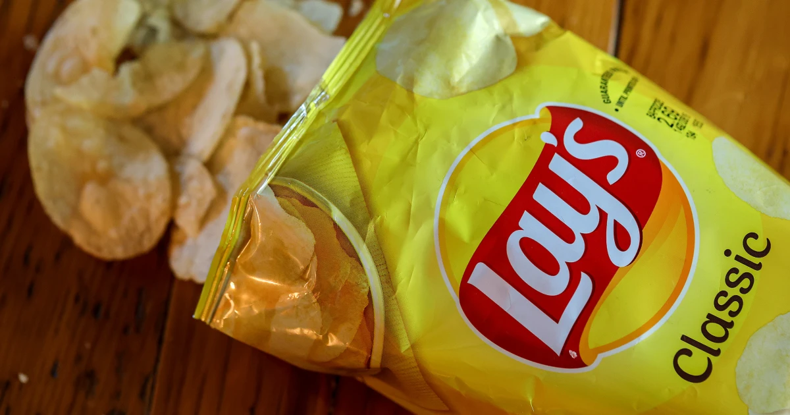
47Lay’s and Doritos maker to raise prices on small bags of chips
Red Robin Gourmet Burgers, Inc. Q1 2026 Earnings Call Summary
Red Robin Gourmet Burgers Q1 Earnings Call Highlights
AirSculpt Technologies Sees Sales Rebound, GLP-1 Tailwind for Body Contouring Growth
Toll Brothers Says Its Average Home Prices Back Above $1 Million
Are consumers cracking under the weight of high prices? We’re about to find out
Financials & Banking
Goldman Sachs to lead SpaceX IPO; Investec profit and dividend at record, sweetens private-banking offering. Upstart applies for national bank charter. Franklin Templeton announces distributions. Fed officials discussed rate hike at last meeting. Junk debt rally sparks complacency fears.
Investment banking activity picking up with SpaceX IPO. Private banking and wealth management are growth areas. Fintech lending (Upstart) seeking regulatory legitimacy. Rising rates and credit risk are concerns in high-yield markets.
Goldman Sachs set to be named lead left underwriter for SpaceX IPO, source says
SpaceX confirms plans for an IPO that could make Elon Musk a trillionaire
South Africa Gains Lift Investec Profit, Dividend to Record
Investec Sweetens Private-Banking Offering to Lure Rich Clients
Upstart Just Applied for a National Bank Charter After a Tough Quarter. Could That Change the AI Lending Story?
Franklin Templeton Announces Distributions for Certain Closed-End Funds Pursuant to their Managed Distribution Policy for the Month of June 2026
Fed officials’ concerns about inflation sparked talk of rate hike during last meeting
Junk Debt’s Red-Hot Rally Sparks Complacency Fears as Risk Rises
Healthcare & Biotech
Option Care climbs 5.9% on US healthcare developments. ImmunityBio announces FDA acceptance of supplemental BLA for ANKTIVA. Quadria-backed Aragen Life plans $300M India IPO.
Healthcare sector sees positive regulatory catalysts and IPO activity. Biotech remains a high-risk, high-reward area with FDA decisions driving stock moves.
Option Care (OPCH) Climbs 5.9% on US Healthcare Developments
ImmunityBio Announces FDA Acceptance of Supplemental BLA for ANKTIVA® Plus BCG in BCG-Unresponsive Non-Muscle Invasive Bladder Cancer with Papillary Disease; PDUFA Date Set for January 6, 2027 - ImmunityBio
Quadria-Backed Aragen Life Said to Plan $300 Million India IPO
Real Estate & REITs
High-yield REIT hikes dividend by 7.1%, shares look compelling. KE Holdings (BEKE) profits soar double-digits, shares jump 5%.
REITs offering dividend growth are attractive in a stable rate environment. Chinese real estate platform showing recovery.
Telecom & Media
BT sees revenue declines as UK competition rises. Byron Allen gets Stephen Colbert's 'Late Show' time slot. News organizations sue to unseal filings in DOJ election investigation.
Telecom sector faces competitive pressures and revenue challenges. Media landscape shifting with new programming deals and legal battles.
Risk Assessment
Identified risk factors, impact levels and mitigation strategies
Junk debt rally and complacency
MediumMitigation: Reduce high-yield bond exposure; increase allocation to investment-grade credit; monitor credit spreads for widening.
China-EU trade war escalation
MediumMitigation: Diversify supply chain exposure; reduce holdings in companies heavily reliant on China-EU trade; consider domestic-focused equities.
Oil Swings After Steep Drop as Traders Await Iran Response to US
Gold Steadies as Traders Weigh Prospects of US-Iran Peace Deal
Goldman Says Oil Drawdowns Hit Record Pace as Buffer Shrinks
US Stocks Steady as Traders Await Hormuz Progress: Markets Wrap
Copper Retreats as US and Iran Trade Threats on Peace Deal
Iran War Spurs Extreme Bear Scenarios for Asia Currencies, Bonds
War Weighs on Global Growth With Inflation Worries Intensifying
Euro-Zone Growth Is Buckling Under Weight of War Impact
Fed officials’ concerns about inflation sparked talk of rate hike during last meeting
Are consumers cracking under the weight of high prices? We’re about to find out
Junk Debt’s Red-Hot Rally Sparks Complacency Fears as Risk Rises
China Warns EU of Retaliation as Bloc Mulls Tougher Trade Curbs
Target is set to report first-quarter earnings, offer read on consumer - CNBC
Target sees unexpected shift in customer behavior
How Rising Gas Prices Are Hampering 2026 Summer Travel Plans
Lay’s and Doritos maker to raise prices on small bags of chips
S&P 500 futures fall as traders await Nvidia’s earnings: Live updates - CNBC
Nvidia's Earnings Are Hours Away. Here Are 3 Things to Watch. - Yahoo Finance
Nvidia slips after earnings, SpaceX & OpenAI IPOs in focus | The Asia Trade 5/21/2026
xAI burned $6.4B last year - SpaceX’s IPO filing shows why the spending is far from over
Nvidia’s Huang Ignites Asia Tech Rally With AI, Robots Vision
Codelco Fires Executive for Overstating Copper Output in Chile
Strategic Recommendations
Actionable investment opportunities and defensive strategies
Investment Opportunities
Buy Nvidia on any post-earnings dip if guidance is strong
medium-termNvidia remains the AI leader; any pullback from high expectations is a buying opportunity given long-term AI demand.
Invest in SpaceX IPO via Goldman Sachs-led syndicate
long-termSpaceX is a unique growth story with AI, Mars, and Starlink; IPO could be a generational opportunity despite high valuation.
Accumulate high-yield REITs with dividend growth
medium-termREITs like the one hiking dividend by 7.1% offer compelling income and potential capital appreciation in a stable rate environment.
Buy Option Care (OPCH) on healthcare tailwinds
short-termPositive US healthcare developments and strong stock momentum suggest further upside.
Consider Credo Technology (CRDO) ahead of earnings
short-termStrong chip demand and pre-earnings momentum indicate potential upside.
Defensive Strategies
Increase cash allocation to 15-20%
short-termGeopolitical risks, inflation uncertainty, and high valuations warrant higher cash reserves for flexibility.
Hedge oil exposure with put options or inverse ETFs
short-termOil price swings due to Iran tensions could hurt energy stocks; hedging protects against sudden drops.
Reduce high-yield bond exposure
medium-termJunk debt rally has created complacency; rising default risk and potential rate hikes warrant moving to investment-grade bonds.
Buy gold as geopolitical hedge
medium-termGold is steadying amid Iran deal uncertainty; serves as safe haven against geopolitical and inflation risks.
Underweight European equities
medium-termEuro-zone growth buckling under war impact; recession risk rising. Shift to US and Asia.
S&P 500 futures fall as traders await Nvidia’s earnings: Live updates - CNBC
Nvidia's Earnings Are Hours Away. Here Are 3 Things to Watch. - Yahoo Finance
Nvidia slips after earnings, SpaceX & OpenAI IPOs in focus | The Asia Trade 5/21/2026
Nvidia’s Huang Ignites Asia Tech Rally With AI, Robots Vision
Goldman Sachs set to be named lead left underwriter for SpaceX IPO, source says
SpaceX confirms plans for an IPO that could make Elon Musk a trillionaire
SpaceX IPO Requires Leap of Faith in AI, Mars and Musk’s Vision
This High-Yield REIT Just Hiked Its Dividend By 7.1%. Its Shares Look Compelling Here.
Option Care (OPCH) Climbs 5.9% on US Healthcare Developments
Credo Technology (CRDO) Soars 8% as Investors Gear Up for Earnings
Quadria-Backed Aragen Life Said to Plan $300 Million India IPO
War Weighs on Global Growth With Inflation Worries Intensifying
Euro-Zone Growth Is Buckling Under Weight of War Impact
Oil Swings After Steep Drop as Traders Await Iran Response to US
Gold Steadies as Traders Weigh Prospects of US-Iran Peace Deal
Fed officials’ concerns about inflation sparked talk of rate hike during last meeting
Are consumers cracking under the weight of high prices? We’re about to find out
Iran War Spurs Extreme Bear Scenarios for Asia Currencies, Bonds
Goldman Says Oil Drawdowns Hit Record Pace as Buffer Shrinks
Copper Retreats as US and Iran Trade Threats on Peace Deal
Junk Debt’s Red-Hot Rally Sparks Complacency Fears as Risk Rises
Market Outlook
Forward-looking scenarios, key catalysts and indicators to watch
Short-term · 1–3 months
1-3 month outlook: Markets are likely to remain volatile due to Nvidia earnings reaction, Iran geopolitical developments, and Fed rate hike rhetoric. Consumer spending data (Target) and inflation readings will be key. Oil prices will swing on Hormuz news. AI sector may see profit-taking if Nvidia disappoints, but long-term trend remains intact. Junk debt rally could reverse if risk appetite wanes. Expect choppy trading with a defensive tilt.
Long-term · 6–12 months
6-12 month outlook: AI investment cycle will continue to drive tech, but regulatory and valuation risks increase. Geopolitical tensions (Iran, China-EU) could disrupt global trade and energy markets. Inflation may remain sticky, forcing Fed to keep rates higher for longer. Consumer spending may slow further, impacting retail and housing. SpaceX IPO could reignite IPO market. Emerging markets (India, China AI) offer growth opportunities. Overall, a cautious but opportunistic stance is warranted.
Key Catalysts
- Nvidia earnings and guidance (May 21-22)
- Iran-US peace deal negotiations and Hormuz Strait developments
- Fed minutes and speeches for rate hike signals
- Target Q1 earnings and consumer spending data
- China-EU trade retaliation measures
- SpaceX IPO filing and pricing details
- Euro-zone GDP and inflation data
- Oil inventory data and OPEC+ decisions
- US CPI and PCE inflation reports
- FDA decisions on ImmunityBio and other biotech catalysts
Monitor Closely
- Nvidia (NVDA) stock price and options activity post-earnings
- WTI and Brent crude oil prices
- Gold (GLD) and copper (HG) prices
- US 10-year Treasury yield and yield curve
- High-yield credit spreads (HYG, JNK)
- EUR/USD and Asian currency pairs (especially INR, IDR, KRW)
- Target (TGT) earnings and retail sales data
- SpaceX IPO news and regulatory filings
- Fed funds futures and rate hike probability
- China yuan (CNY) and exporter earnings impact
- Codelco copper output and investigation updates
- Bitcoin and crypto market (Bitcoin miners rising on Nvidia beat)
S&P 500 futures fall as traders await Nvidia’s earnings: Live updates - CNBC
War Weighs on Global Growth With Inflation Worries Intensifying
Euro-Zone Growth Is Buckling Under Weight of War Impact
Junk Debt’s Red-Hot Rally Sparks Complacency Fears as Risk Rises
SpaceX confirms plans for an IPO that could make Elon Musk a trillionaire
China Warns EU of Retaliation as Bloc Mulls Tougher Trade Curbs
Nvidia's Earnings Are Hours Away. Here Are 3 Things to Watch. - Yahoo Finance
Oil Swings After Steep Drop as Traders Await Iran Response to US
Gold Steadies as Traders Weigh Prospects of US-Iran Peace Deal
Fed officials’ concerns about inflation sparked talk of rate hike during last meeting
Are consumers cracking under the weight of high prices? We’re about to find out
Goldman Says Oil Drawdowns Hit Record Pace as Buffer Shrinks
Nvidia slips after earnings, SpaceX & OpenAI IPOs in focus | The Asia Trade 5/21/2026
US Stocks Steady as Traders Await Hormuz Progress: Markets Wrap
Nvidia’s Huang Ignites Asia Tech Rally With AI, Robots Vision
Copper Retreats as US and Iran Trade Threats on Peace Deal
Iran War Spurs Extreme Bear Scenarios for Asia Currencies, Bonds
Upstart Just Applied for a National Bank Charter After a Tough Quarter. Could That Change the AI Lending Story?
Target is set to report first-quarter earnings, offer read on consumer - CNBC
Target sees unexpected shift in customer behavior
Goldman Sachs set to be named lead left underwriter for SpaceX IPO, source says
How Rising Gas Prices Are Hampering 2026 Summer Travel Plans
Lay’s and Doritos maker to raise prices on small bags of chips
Toll Brothers Says Its Average Home Prices Back Above $1 Million
Option Care (OPCH) Climbs 5.9% on US Healthcare Developments
ImmunityBio Announces FDA Acceptance of Supplemental BLA for ANKTIVA® Plus BCG in BCG-Unresponsive Non-Muscle Invasive Bladder Cancer with Papillary Disease; PDUFA Date Set for January 6, 2027 - ImmunityBio
Quadria-Backed Aragen Life Said to Plan $300 Million India IPO
This High-Yield REIT Just Hiked Its Dividend By 7.1%. Its Shares Look Compelling Here.
KE Holdings (BEKE) Profits Soar Double-Digits, Shares Jump 5%
BT Sees Revenue Declines as UK Competition Rises
Byron Allen on how CBS handed him Stephen Colbert’s ‘Late Show’ time slot
News organizations sue to unseal filings in DOJ’s Fulton County election investigation
Sen. Josh Hawley says he favors a stock trading ban that applies to presidents
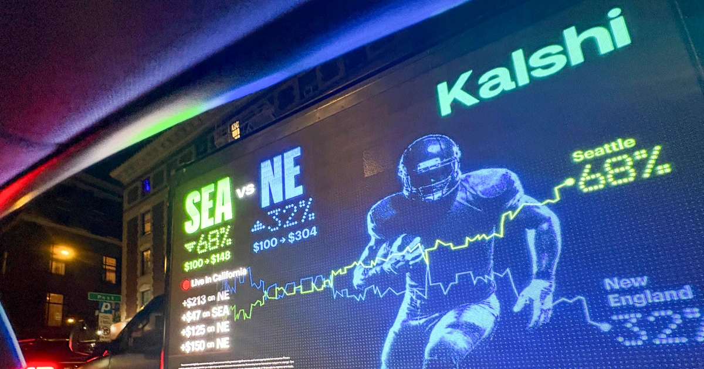
62Prediction market ‘watchdog’ launches six-figure ad campaign ahead of Senate hearing
Trump tells Fed to consider fintech access to payment accounts
Upstart Just Applied for a National Bank Charter After a Tough Quarter. Could That Change the AI Lending Story?
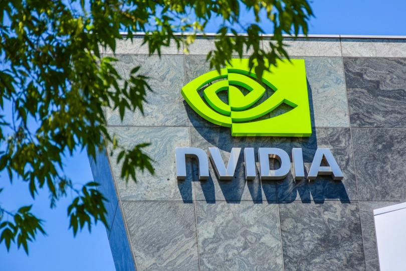
90Bitcoin miners rise as Nvidia posts big earnings beat and strong outlook
Over 1,000 China Exporters Flag Yuan’s Gains in Earnings Reports
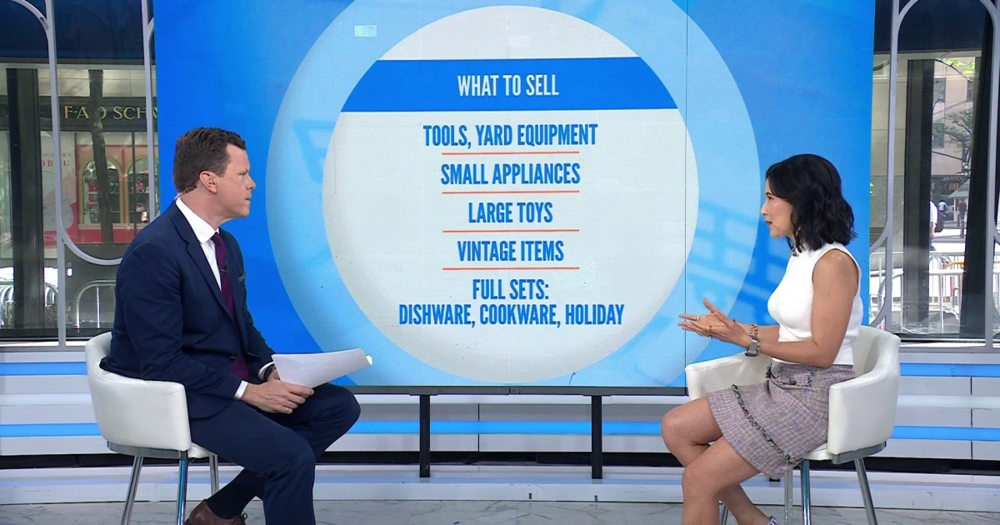
Tips for a Successful Yard Sale: What to Sell, Pricing, Resale Sites
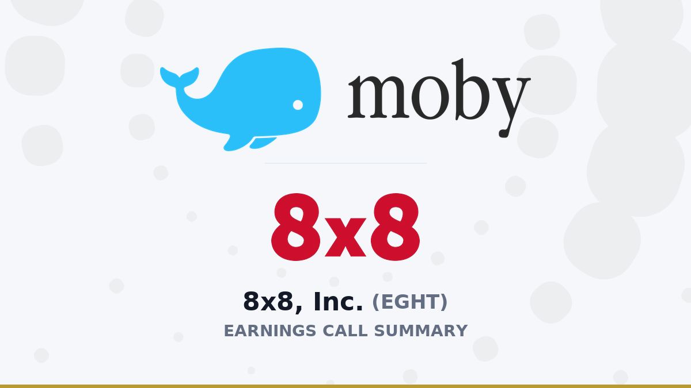
8x8, Inc. Q4 2026 Earnings Call Summary
Codelco Fires Executive for Overstating Copper Output in Chile
Meta begins cutting thousands of jobs in sweeping layoffs. Here's how much it's paying in severance. - Business Insider
Option Care (OPCH) Climbs 5.9% on US Healthcare Developments
XP Inc. Q1 2026 Earnings Call Summary
Deloitte Adds Blocknative Team as Crypto Infrastructure Firm Winds Down
Sharon AI Announces Closing of Private Offering of Convertible Senior Notes With Aggregate Gross Proceeds of US$350 Million
Quadria-Backed Aragen Life Said to Plan $300 Million India IPO
BT Sees Revenue Declines as UK Competition Rises
Microsoft’s Sliding Stock, AI Woes Make It Market’s Biggest Drag
Target is set to report first-quarter earnings, offer read on consumer - CNBC
S&P 500 futures fall as traders await Nvidia’s earnings: Live updates - CNBC
Why Bloom Energy Stock Bounced 8% Higher Today
South Africa Gains Lift Investec Profit, Dividend to Record
BIO-key International, Inc. Q1 2026 Earnings Call Summary
Barefoot Gold Coast man gives chase to brazen fuel thief

8x8 (EGHT) Q4 2026 Earnings Transcript
German Weapons Maker Rheinmetall Selling First Bond in 16 Years
War Weighs on Global Growth With Inflation Worries Intensifying
Target sees unexpected shift in customer behavior
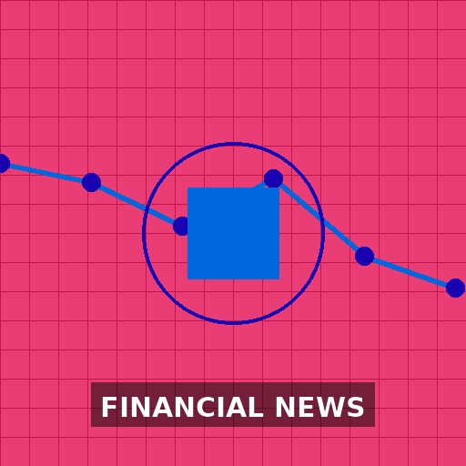
Sharon AI Announces Closing of Private Offering of Convertible Senior Notes With Aggregate Gross Proceeds of US$350 Million
US regulator sues to block Minnesota's first-in-nation ban on prediction markets
Goldman Sachs set to be named lead left underwriter for SpaceX IPO, source says
A Once-Empty Hotel Is Now a Hub for Dealmakers Rushing to Venezuela
Euro-Zone Growth Is Buckling Under Weight of War Impact
Junk Debt’s Red-Hot Rally Sparks Complacency Fears as Risk Rises
ImmunityBio Announces FDA Acceptance of Supplemental BLA for ANKTIVA® Plus BCG in BCG-Unresponsive Non-Muscle Invasive Bladder Cancer with Papillary Disease; PDUFA Date Set for January 6, 2027 - ImmunityBio
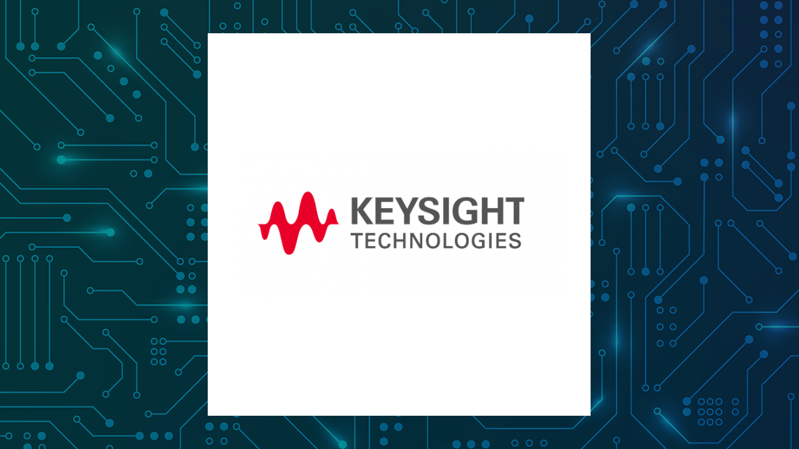
Keysight Technologies Q2 Earnings Call Highlights
SpaceX confirms plans for an IPO that could make Elon Musk a trillionaire
Goldman CEO Slides Into Musk’s DMs, Iran Reviews Trump’s Latest Offer | The Opening Trade 5/21/2026
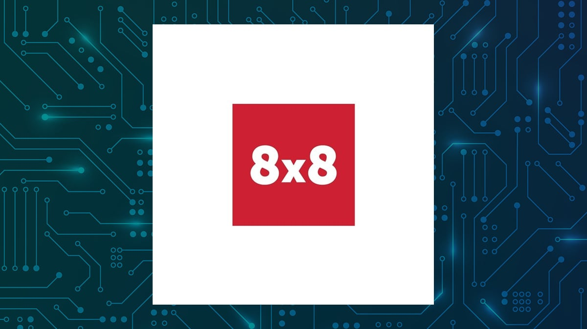
8X8 Q4 Earnings Call Highlights
Cybertruck pulled from Grapevine Lake after driver tests vehicle's Wade Mode - Dallas News
How Rising Gas Prices Are Hampering 2026 Summer Travel Plans
China Warns EU of Retaliation as Bloc Mulls Tougher Trade Curbs
Investec Sweetens Private-Banking Offering to Lure Rich Clients
Nvidia's Earnings Are Hours Away. Here Are 3 Things to Watch. - Yahoo Finance
Sen. Josh Hawley says he favors a stock trading ban that applies to presidents
India Seeks Information from Capital Group in Front-Running Case
News organizations sue to unseal filings in DOJ’s Fulton County election investigation
Trump backs down from idea of banks collecting citizenship information
Soybeans Close Tuesday with Mixed Action
This High-Yield REIT Just Hiked Its Dividend By 7.1%. Its Shares Look Compelling Here.
Exclusive-Stellantis to build Voyah brand EV for China's Dongfeng in French plant, sources say
Jeff Bezos says raising taxes on the wealthy wouldn’t help the average American
Bonds 101: What you need to know about the bond market
Lay’s and Doritos maker to raise prices on small bags of chips
Himax Technologies (HIMX) Climbs 6.6% on Strong Chip Demand
Trump tells Fed to consider fintech access to payment accounts
KE Holdings (BEKE) Profits Soar Double-Digits, Shares Jump 5%
These 5 high-yield savings accounts have no minimum balance requirement
Red Robin Gourmet Burgers, Inc. Q1 2026 Earnings Call Summary
Oil Swings After Steep Drop as Traders Await Iran Response to US
U.S. prosecutors drop fraud charges against billionaire Indian businessman
Gold Steadies as Traders Weigh Prospects of US-Iran Peace Deal
Is The MBA Really In The Middle Of A ‘Fire Sale’?
Fed officials’ concerns about inflation sparked talk of rate hike during last meeting
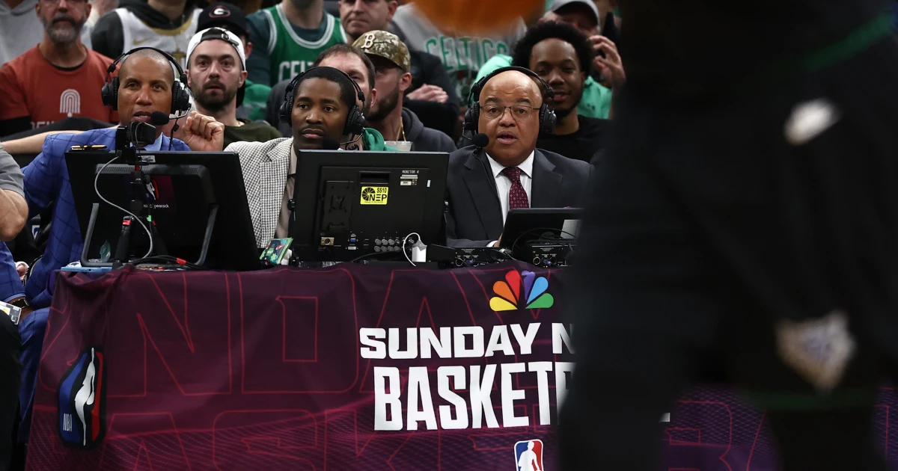
Jamal Crawford has to tone down his excitement while calling NBA games
Are consumers cracking under the weight of high prices? We’re about to find out
A millennial who's saved enough to take 'mini retirements' shares the mindset shift anyone can use to build wealth
Toll Brothers Says Its Average Home Prices Back Above $1 Million
Prediction market ‘watchdog’ launches six-figure ad campaign ahead of Senate hearing
Goldman Says Oil Drawdowns Hit Record Pace as Buffer Shrinks
A Legendary Midwest Beer Is Being Discontinued After 177 Years - Tasting Table
IRIDEX Corporation Q1 2026 Earnings Call Summary
Deere Keeps Outlook With Construction Boost as Farmers Struggle
Credo Technology (CRDO) Soars 8% as Investors Gear Up for Earnings
Nvidia slips after earnings, SpaceX & OpenAI IPOs in focus | The Asia Trade 5/21/2026
Why Cerebras CEO Andrew Feldman Built The World’s Largest Computer Chip
US Stocks Steady as Traders Await Hormuz Progress: Markets Wrap
FSB Regional Consultative Group for the Americas meets in Grand Cayman
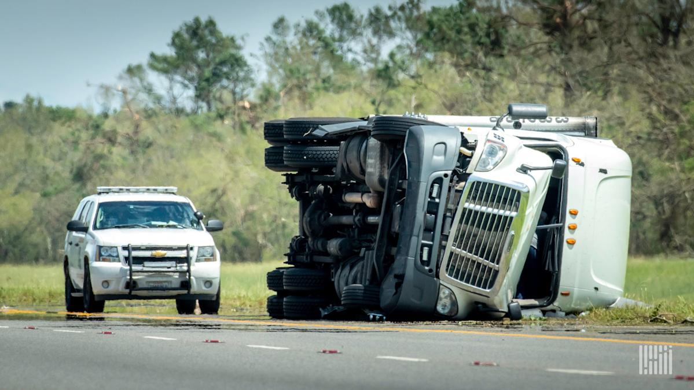
Post-Montgomery, focus grows on fate of 3PL insurance premiums
BitGo Rolls Out Modular Crypto Infrastructure Platform for Banks
xAI burned $6.4B last year - SpaceX’s IPO filing shows why the spending is far from over
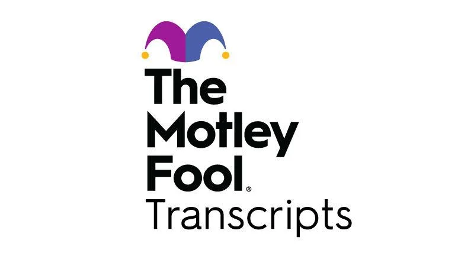
Intuit (INTU) Q3 2026 Earnings Transcript
Nvidia’s Huang Ignites Asia Tech Rally With AI, Robots Vision
AI Is Fast-Tracking Gen Z Workers Into More Complex Jobs
Airbnb CEO Brian Chesky on the company's expansion beyond vacation rentals
Skillz Q1 Earnings Call Highlights
Keysight Technologies, Inc. Q2 2026 Earnings Call Summary
Jess Pegula on the Business of Tennis
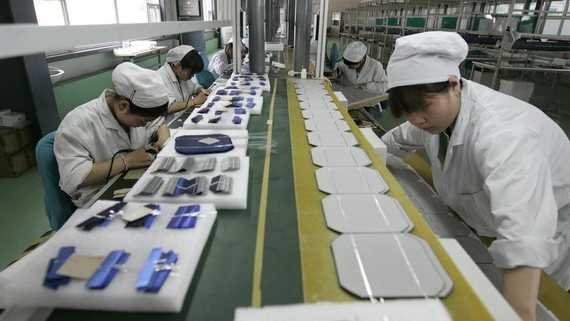
China Turns Green Tech Into an Economic Lifeline
Copper Retreats as US and Iran Trade Threats on Peace Deal
Odd Lots: Why Cerebras Built The Largest Computer Chip (Podcast)
Red Robin Gourmet Burgers Q1 Earnings Call Highlights
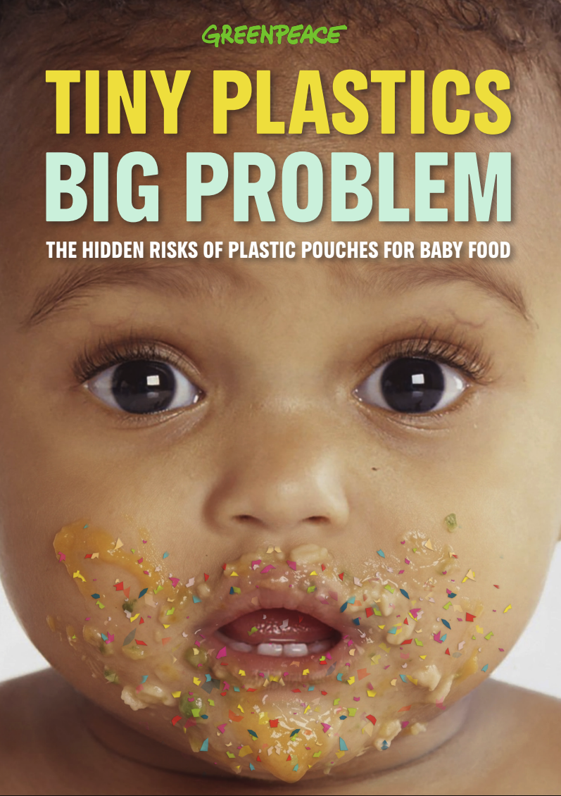
Greenpeace study finds microplastics in Gerber baby food pouches
Manus Weighs Raising $1 Billion to Unwind Meta Takeover
Byron Allen on how CBS handed him Stephen Colbert’s ‘Late Show’ time slot
AirSculpt Technologies Sees Sales Rebound, GLP-1 Tailwind for Body Contouring Growth
Bitcoin miners rise as Nvidia posts big earnings beat and strong outlook
7 best homeowners insurance companies of 2026
NextNRG Inc. Q1 2026 Earnings Call Summary
Mercedes’ electric AMG GT 4-door coupe can go 0-60 in 2 seconds - The Verge
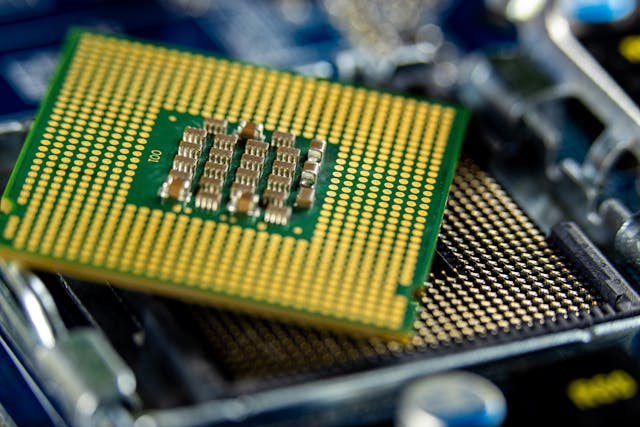
AXT Inc. (AXTI) Jumps 6.6%, Investors Gear Up for Business Updates
Indonesian Palm Oil Sinks as Commodity Overhaul Sows Confusion
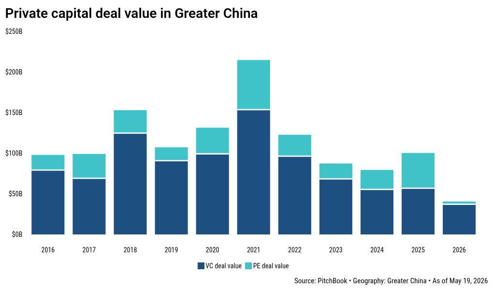
China's AI and robotics edge is winning back Western LPs, say investors
SpaceX IPO Requires Leap of Faith in AI, Mars and Musk’s Vision
Why the CEO of Barnes & Noble would support selling AI-written books in stores
Iran War Spurs Extreme Bear Scenarios for Asia Currencies, Bonds
Upstart Just Applied for a National Bank Charter After a Tough Quarter. Could That Change the AI Lending Story?
Franklin Templeton Announces Distributions for Certain Closed-End Funds Pursuant to their Managed Distribution Policy for the Month of June 2026
TADCO approves 2030 strategy
Over 1,000 China Exporters Flag Yuan’s Gains in Earnings Reports